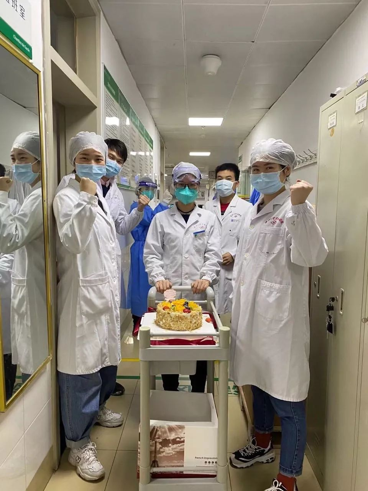
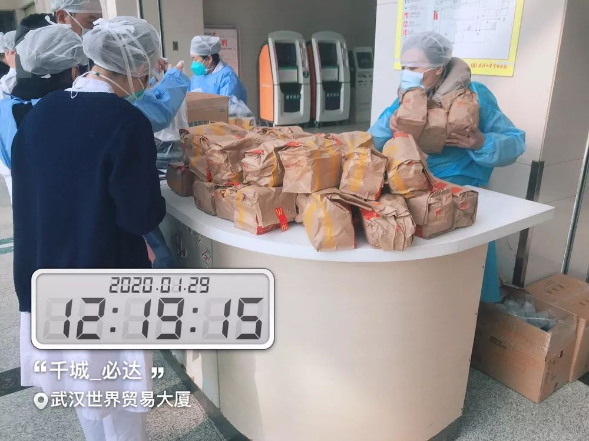
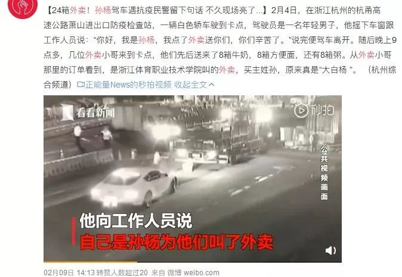

在人间丨我走了50公里，回武汉送外卖
原文链接 备份链接 一 我叫李丰杰，我在武汉送外卖。 我本来想过年留在武汉值班跑单，但是腊月二十九那天早上一出门，我妈就一直给我打电话，每隔十分钟或者半个小时就打一次，强烈要求我回家，说武汉出现了新型冠状病毒，再不回来就回不来了。搞得我没 …


**
在武汉这座几乎停摆的城市里，一群外卖小哥和他们背后的团队还在正常运转。他们需要每天前往收治新冠肺炎的定点医院，给一线医护人员送餐，是连接这座城市的动线。这项“医护关爱计划”，是在1月26日开始的，饿了么联合406家品牌商户参加。在全国，外卖小哥们已经累计送出超过11万份爱心餐，其中武汉包括协和医院、第五医院、中南医院在内的19家医院，他们送出了5万多份。他们也接到过许多特殊的订单。外卖小哥李浩洁，为武汉一位过生日的值班护士找到了珍贵的奶油蛋糕；外卖小哥徐磊，接到奥运冠军孙杨的订单，给杭州萧山的民警们送出了一份特殊外卖。奔跑在医院之间，并不是一件容易的事。一开始，外卖小哥们总是轻描淡写，觉得他们的工作很普通，聊到深处，才肯袒露内心的一点担忧，和一份职业带来的价值感。李浩洁和他们的同事们相信，一切肯定都会好起来的，那时，他们一定要好好吃顿饭，再去武大看樱花。
以下是4个和外卖小哥有关的故事。
**
文 | 周取
编辑 | 金匝
运营 | 一凡
跑遍全城，只为买一块奶油蛋糕
李浩洁 25岁
做物流，而且是即时物流，就像别人说的一句话：地球不爆炸，我们不放假。武汉的疫情爆发和封城是大家预料之外的事，我们站点三十多个人，包括我，春节都没回家。刚开始，大家都不愿意接送往医院的订单，很正常，骑手们很担心，很恐慌。我跟大家说：别怕，我在，没什么。所以公司安排我们配送武汉中南医院的餐食，是我和副站长带着几个骑手去送餐，我得自己先做。第一次去送的时候，我也害怕，我们把餐送到医院4号楼大厅，放那儿就走，不想在里面待很长时间，电动车的头盔也一直戴着。中南医院有发热门诊，谁都不愿意靠近，医院周围也没有人，没有一家开着的商户，只有车，只有恐惧。这半个多月，我一直在给我底下的同事们打气：这是在困难时期，我们手上的订单，对顾客很重要，想想我们面对的，可能就是医生、病人，或是无助的老人和孩子。医护人员替我们扛着那么多事情，我们也应该扛一扛。后来无接触配送推出之后，大家情绪上也稍微放松了些。印象最深的一个单子，是2月4号，中南医院检验科核酸检测组的一位小姑娘过生日，他们也是接触肺炎患者最多的科室，姑娘的父亲刚刚过世，当天还要在医院值班24小时，她说，就想吃块生日蛋糕，检验科的同事们找到了我们，问我们有没有可能送一块有奶油的蛋糕，同时也告诉我们，“如果为难就算了。”我知道这个情况后，心里很不舒服，换作是我，亲人去世，会受不了那个打击，但她还得值班，守在一线，我可能没法完全体会到她的处境，但我觉得她蛮了不起的。我回复检验科说，我来想想办法。我想找一家开着的蛋糕店，跑了很多地方，平台上搜不到，就骑电动车出去找，找了一下午也没找到，后来还是到了第二天，一位市场的同事，在我们的工作范围外找到了一家蛋糕店，老板愿意临时开业，做了草莓奶油生日蛋糕，我们送去了医院大厅。后来，听说小姑娘在医院的休息室简单地过了一个有蛋糕的生日，我们还收到了她发来的一段话，也是她的生日愿望：“希望等疫情结束了，我能在家点单外卖，等骑手送达后，我要大声跟他说谢谢，然后握手拥抱。”

▲图 / 受访方提供
这些天，我们经常顾不上吃饭，早上泡个泡面，中午如果有时间，就去旁边的超市再买桶面，尽快解决，也有可能就吃不上，等着晚上9点多下班回家再吃。日子已经这样糊弄很久了，有时候会有一些商家，比如真功夫，有骑手福利餐，公司会通知我们领一下，可能一个星期有两次。我们面对的一切也在发生变化。订单数确实是在减少的，之前我们每天有两千多个订单，现在只有五六百，除了附近一家餐馆还开着，每天会有七八十个人点餐，其他人大都是点超市、水果店和药店的单子，而且金额很大，一看就是好几天的库存。而且这段时间大家也会更愿意释放善意吧，有人会给骑手送一些水果，有人会线上打赏或是留言，还有人觉得我们每天在外面跑很危险，送口罩和消毒水，很感谢他们。 我们这个团队里，有个50多岁的大叔骑手，平时人很乐观，但这次他就很担心，毕竟年纪大，也是易感人群，我也主动跟他说，要不就在家休息几天。没想到前两天他开始牙疼，牙齿从牙根那坏掉了，疼了好几天，吃泡面都咬不动，牙医诊所也没开门，又不敢去医院，他自己下不了手，只好让我帮忙，我戴着手套，生生把他牙齿给拔了下来。太无奈了，这样的日子里，只能自力更生。每天早上9点前我就来到站点，督促骑手来量体温、消毒，让大家错开时间来，所以会忙到11点。以前他们来，都是吵吵闹闹，说“快点快点，量体温，我要开工了”。但感觉前两天，气氛突然变了，同事们会问我，刚开始感染人数是几百，后来几千，现在几万，越来越严重，我们会不会很不安全？出了问题怎么办？那天晚上回家，我失眠了，到凌晨6点才睡着，这段时间我压力很大，一直不太睡得着，但那天最严重，整晚上都胡思乱想。我很担心，想很多事情，我下边的30多个骑手，他们信任我，一直在岗位上，如果出了什么问题，我觉得我会承受不了。我也会想，自己是不是做错了什么，很内疚，很矛盾，我希望大家都待在家里不出来，那样很安全，但我们必须要出来工作，不然很多人可能连饭都吃不上。我是有事闷在心里的性格，这些想法，我和副站长也没聊过，在骑手们面前更是不愿意表露负面情绪，我只是会抓住他们聊天，问他们的工作、身体情况，会给他们买点吃的，给他们打气。公司很关心我们，会每天问我们的情况，让我们有任何问题直接说，很有人情味；饿了么平台也有24小时心理援助热线，我没打过，不好意思打，也觉得到现在为止，我还能够自己调整，没到压力把我压垮的程度。我觉得人还是要坚强一点，一个人垮了，可能一群人都垮了。压力大的时候也想父母，我很久没见到他们了，平时没时间回去，但我也不能打电话打得太频繁，因为平时都是有事才给家里打电话，我怕我打给他们，会让他们担心，去医院送餐的事情我也没跟他们讲，就骗他们，说我每天都在宿舍，哪里都不去。不能聊这些，不聊了，我们应该聊点积极的。我相信武汉会没事，一切都会过去，哪怕周期再长一些，早晚都会过去的。我在，兄弟在，就没有什么困难是克服不了的。我很感谢这帮兄弟，他们有时候会吐槽，会害怕，但他们还是在坚持工作。我想等这次疫情过去，大家得好好一起吃一顿饭，好好聊聊天。
我原本就是个很宅的人，11月份来到武汉，已经有三个多月了，除了送餐，没怎么出过门，这次疫情过后，我很想去武大看樱花，听说是4月开得正好，那时候，武汉应该已经好起来了吧。

▲图 / 受访方提供
第一个报名为医院送餐的骑手
钟仕红 27岁
那是1月26号，当时公司给我打电话，说现在武汉一线的医护人员吃饭都没法得到保障，饿了么决定抽调一部分员工去支援，我立马说我去。我是最合适的，作为站点的站长，我应该站出来，而且我有面包车，可以一次就把所有餐食运过去，不然就需要好几个骑手，所以我没有犹豫，直接申请了。送餐的时候，我也尽量不让同事跟我一起去，我一个人能搞定的事情，少一个人去，就少一份风险。1月28号之后，我单独负责武汉中南医院、第六人民医院、协和医院的送餐。前两家医院我是把餐直接交给医院后勤的人员，协和医院的人手很紧张，我需要把车停在楼下，等着30多个科室派人下来分别取餐，都是戴着口罩、穿防护服的一线医护人员，脚步非常匆忙。在给医院送餐之前，就有人嘱咐说，必须得在12点前送到，不然医生就没时间吃饭了，所以如果中午同时要送三家的话，我会提前，11点左右就把餐送到，放到保温餐箱里，等着他们来取。第一次去医院送餐，我印象深刻，那是个协和医院的护士，一个女生，很不好意思地问我，“有没有汉堡？”我就觉得还挺心酸的，想起大年三十有的医护人员吃的年夜饭是泡面，他们应该很久都顾不上好好吃饭了。那天他们领餐的时候，也不停地道谢，我很过意不去，觉得应该是我们对他们说谢谢，他们冲在了最危险的前方。

▲图 / 受访方提供
我老婆在封城之前就回了娘家，她之前就跟我打电话，一直嘱咐我，不要出门了，跟公司申请在家办公。我说那不行，我作为一个管理者这么做，那下面一线的骑手要怎么想？接了支援医院的任务之后，她也很担心，我就跟她说，我会做好防护，时刻都会注意细节问题。每一天，我都会随身携带酒精，我把家里花露水那种喷壶找出来，灌上酒精带着，一天能用完200ml。去人密集的地方、送完餐之后、回家之前，我都会把自己喷一遍，坐电梯前，我都会先在电梯间喷两下，把空气消毒，给人送餐，我会先把外包装都喷下酒精，然后放在离对方2米处的位置。按电梯键我会用一次性手套，去医院送餐，每隔十分钟，我会换一次手套。不送餐的时候，又怕公司有其它配送任务，我就把车开到一个空旷的地方，打开车窗通风，坐在车里，待到四、五点回家。害怕是正常的，但我更希望自己一直是冷静的。元宵节那天，我还在群里跟大家开玩笑：恭喜我们躲过了初一，也躲过了十五。 我是武汉本地人，很喜欢这座城市，是本能地喜欢，说不出太多原因。以前，我会在休息的时候骑着共享单车，从汉口的一头骑到另一头，不管多远，不管多久。从滠口骑到东西湖舵落口，会路过汉正街，江汉路，中山大道，我也喜欢去昙华林和东湖，不是去景区，是去武昌的东湖南路，路的两边，一边是东湖，一边是武汉大学珞珈山，夏天的傍晚，在那吹风看夕阳看东湖，很舒服。你会觉得这座城市，就是看不厌。
现在武汉太安静了，之前那个嘈杂的武汉，才应该是一个城市真正有的样子，让人觉得心安，希望它能早日变回到那样的武汉。

▲图 / 受访方提供
把30万口罩、万份爱心餐运进武汉
章勇 33岁
我在饿了么的安全部门，做后勤支持，那些给医护人员送餐的骑手，将物资送往武汉的司机，我们会帮忙解决他们的通行问题，也会时刻注意骑手们的安全防护，如果有身体不适的，就得指导他们就医。在封城前一周，我们已经进行各项防护措施：武汉地区办公室以及武汉所有站点立即做好通风消毒杀菌工作，取消站点“早会”等一系列可能引发人群聚集的场景，所有员工暂时先在家办公，同时办公室跟站点配备温度计、口罩、感冒药等物资，要求所有员工每日上报身体状况，骑手送餐必须佩戴口罩，每天消毒等。

▲ 图 / 受访方提供
到后来封城消息传来，每天刷消息疫情情况越来越严重，我一听发热这两个字就怕，但工作是不能停的。1月26号，我们也开始给医护人员送餐，主要是看到他们年夜饭吃泡面，觉得太辛苦了。但这个决定，面临很多问题需要解决，比如合作的商家，像星巴克、小龙坎、香他她煲仔饭、百果园这些，他们的物资怎么进武汉，怎么保证把食物送到医护人员的手里。1月23号，武汉封城，当时就有了很多规定，24号车想要进武汉就比较困难了，我们还有1000多个员工在武汉，防护物资特别是口罩很稀缺。封城那天，公司紧急从仙桃采购了30万个口罩支援武汉。我们联系了许多武汉的部门进行沟通协调，我和同事就守在电脑前打电话，那几天电话总是占线，我都用上3个手机同时来打了将近30多个电话，大年三十那天也是边吃年夜饭边打电话，最后才把事情解决了。1月25号下午，这第一批口罩得以顺利进入武汉，到达一线人员和骑手手中。后来我们把进城出城的程序都制成了模板，发给司机们，需要什么材料，去哪里盖章，和相关部门要怎么沟通，写的很清楚，让司机可以很容易操作。25号的时候，武汉市交管部门的通告是，除经许可的车辆外，中心城区域实行机动车禁行管理。那我们就又要和各个部门去沟通，有特殊需求的车辆怎么运行？非机动车可以通行吗？包括电动车吗？特殊需求包括什么需求？对于交通方面的问题，我们比普通市民问得更细致，特别是跟我们业务相关特性的问题，我们做的很多工作，就是把政府文件转化成普通员工可以执行的信息。 这段时间做的很多工作，都是之前任何一个case没有经历过的，我们也不知道哪条路走得通，就一个个去尝试。 我们这个疫情处置小组，也是包括城市经理、物流、中后台等多部门的人在内，每天都会有很多电话，各个业务的同事或领导都会打电话问情况，钉钉群几分钟不看，消息就是99+，晚上12点还在开会，有时候凌晨两三点，我会接到问我外地物资怎么进来的电话。这种状态持续有半个多月了，每天醒了就是处理消息、打电话，没电话的时候就睡会，然后又被电话打醒，一天都是紊乱的。但我们在家办公，至少我们是安全的，一线的同事才是勇敢的人，也是最需要我们给予支援的人。

▲图 / 受访方提供
为奥运冠军送一份特殊外卖
徐磊 39岁
我老家在河南，初四我就回了杭州，初六开始送餐。这么早回来，是因为看到这次疫情很严重，我是退伍军人，退伍的时候指导员跟我们说，退伍不褪色。虽然送外卖和疫情的关系没有那么直接，但我想着，总是可以出一份力的。2003年，我还在部队，那时候我们去安徽，在淮河流域救灾，很多老百姓的房子被水冲了，我们就筑堤，堆沙包，三天三夜没怎么睡觉。当时我22岁，部队离开的时候，老百姓排了很长时间的队，给我们送吃的，我们有纪律不能要，他们就往我们车上扔。当时心情很复杂，有感动，也觉得很骄傲，这种感觉，一生中很难再有。这次疫情发生后，我在新闻上看到，80多岁的钟南山院士去了武汉，上海、安徽、浙江各个地方的医护人员都去支持了，部队也派人去了，国家有难，好多人打前站，我现在可能去不了武汉，但我也很想做些什么。包括我也看到我在武汉的骑手同事们，他们还是大街小巷地跑，给医院和病人送餐，给社区的家家户户送单，每天坚持跑，哪怕很危险，他们也一直在做事情，我也很有感触。
我在初六那天开始送餐，那时候骑手来的还很少，我每天早上8点出门，晚上9点回，中间没什么休息的时间，没什么开的饭馆，我就自己回家做着吃，家里就我一个人。这几天人会多起来了，每天也有两三个小时的休息时间，会比平时多很多同城业务，比如一个小区的人给另一个小区的人送口罩、吃的、生活用品，可能是因为其中一个小区附近没什么店开门，买东西不方便。帮买的单子也很多，可能是子女买给老人的，我也经常会去盒马买新鲜蔬菜，在那也总是能碰到很多骑手。 2月4号，我接到了一个特殊的捐赠订单，是一位姓孙的先生，要给萧山高速防疫站的民警送8箱牛奶、8箱方便面、8箱粥。当时东西很多，一辆电动车不好送，我还打电话过去问，对方说因为疫情发生后，民警们很不容易，想捐赠给他们。我就答应下来，说我想想办法。我叫了同事们帮忙，三个骑手，骑着电动车送过去的，民警也很热情，帮忙我们卸下来，跟我们说辛苦了。等第二天刷微博，看了热搜，我才知道那位下单的孙先生，竟然就是奥运冠军孙杨。

▲图 / 微博截图
因为现在送单都是无接触配送，小区也不让进，所以倒不是很担心风险，我们也每天都戴口罩和消毒。医院的单子我也接，有两次是让帮忙挂号买药，会花上两三个小时。但我不觉得浪费时间，因为你是在帮助别人，其它单也是一样，都是在帮人解决问题，我觉得，这些都是很有意义的。

▲ 2月13日，阿里巴巴本地生活-饿了么青年突击队向郑州岐伯山医院（河南版“小汤山医院”）捐赠3000份“外卖”。图 / 受访方提供

每人互动
你怎么看待留守武汉的外卖小哥们？

文章为每日人物原创
侵权必究


每人作者
长按二维码向我转账
受苹果公司新规定影响，微信 iOS 版的赞赏功能被关闭，可通过二维码转账支持公众号。
原文链接 备份链接 一 我叫李丰杰，我在武汉送外卖。 我本来想过年留在武汉值班跑单，但是腊月二十九那天早上一出门，我妈就一直给我打电话，每隔十分钟或者半个小时就打一次，强烈要求我回家，说武汉出现了新型冠状病毒，再不回来就回不来了。搞得我没 …
原文链接 备份链接 突发的疫情搅乱了这个春节。武汉封城后，居民被迫留在家中、医护人员无法离开工作岗位，吃饭成了问题。与此同时，餐饮、休闲、商超便利等生活服务业也面临巨大考验。 作为居民和商家的连接点，一群隶属于本地生活服务平台的留守外卖 …
原文链接 备份链接 从武汉封城之日起，三十多岁的外卖员老计一直在工作。他穿梭在江城的大街小巷，一边送餐，一边用手机记录下自己看到的一切。 空荡荡的汉街，戏台上有一只狗。沃尔玛的猪肉档人山人海，“我不敢去，也抢不过”。超市的叶子菜卖得快，去 …
原文链接 备份链接 “ 我生活在这个城市，做了自己该做的事。 武汉封城后，这个城市从未如此空旷安静，路上少有车辆，却有一道独特的风景，就是在城市中穿梭的外卖人员。 疫情下，医护人员在一线救治病人，保障我们的生命安全；而我们这些身在武汉的 …
原文链接 备份链接 摘要：新型冠状病毒肺炎袭城之后，外卖员老计（化名）觉得武汉的马路变宽了，武汉人的面目也温柔下来。大年初一，他给武昌医院的医生送了一餐鲍鱼饭。才华街友谊大道路口的药店口罩卖完了，消毒液还有少量存货，他秒发微博，广而告之。 …